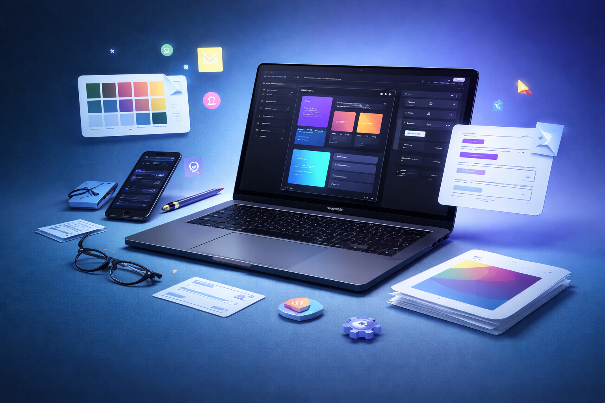

Caso de estudio · portfolio profesional
UIverse: convertir una web de servicios en una prueba clara de mi perfil UX/UI.
El reto no era hacer otra web más vistosa. Era ordenar el mensaje, seleccionar mejor la evidencia y construir un portfolio capaz de explicar quién soy, cómo pienso y qué puedo llevar a código.
Punto de partida
La web funcionaba, pero el foco profesional cambiaba demasiado.
- El mensaje alternó entre perfil junior, producto y captación de clientes sin una prioridad estable.
- Los proyectos estaban presentados como piezas visuales, con poca conexión al código disponible.
- La navegación destacaba servicios y proceso antes que proyectos, perfil y evidencia.
- GitHub existía, pero no formaba parte visible del recorrido principal.
Objetivo
Una lectura profesional en menos de un minuto.
- Definir UX/UI Designer como perfil principal.
- Usar Product Thinking como criterio y Front-End como diferencial.
- Dar prioridad a proyectos que permiten revisar interacción, responsive y repositorio.
- Mantener una vía de contacto freelance sin convertirla en el mensaje dominante.
Evolución
El rediseño fue una secuencia de decisiones, no una capa estética.
2025 · Primera publicación
Creación del portfolio, conexión de proyectos, versión inglesa y primeras correcciones responsive.
Enero 2026 · Enfoque de producto
Reestructuración para explicar mejor pantallas, flujos y capacidad de implementación.
Mayo-junio 2026 · Servicios y casos
Mejora visual, nuevo hero, casos destacados y primera página de caso de estudio.
Julio 2026 · Empleabilidad
Posicionamiento UX/UI, navegación profesional, proyectos reordenados y GitHub visible.
Solución actual
La Home responde primero a quién soy, qué hago y dónde está la prueba.
El hero presenta el perfil híbrido sin inflarlo. La navegación conduce a proyectos y capacidades, mientras cada caso incorpora demo, tecnologías y repositorio para que la evidencia sea verificable.
Abrir UIverse
Decisiones UX/UI
Cambios que mejoran la lectura del perfil.
Un cargo principal
UX/UI lidera el mensaje; producto y Front-End explican el valor diferencial sin competir entre sí.
Proyectos antes que servicios
La navegación y los CTA priorizan el trabajo publicado, que es lo que necesita validar un reclutador.
Evidencia junto al relato
Demo y GitHub aparecen unidos para conectar decisiones visuales con implementación real.
Creatividad con jerarquía
El fondo y los acentos mantienen personalidad, mientras tipografía y espaciado sostienen la legibilidad.
Construcción
Diseñado para funcionar, no solo para verse bien.
- HTML semántico con jerarquía de encabezados y landmarks claros.
- CSS responsive con componentes visuales reutilizados entre Home y casos.
- Estados de foco visibles, enlaces descriptivos y contraste cuidado.
- Versión española e inglesa, metadatos sociales y despliegue continuo en Vercel.